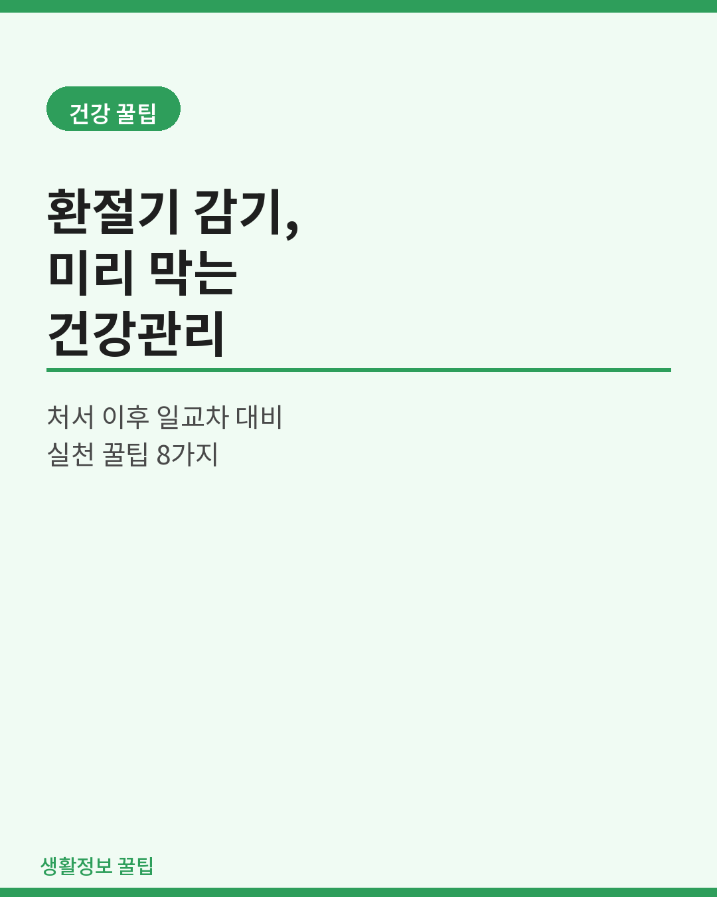
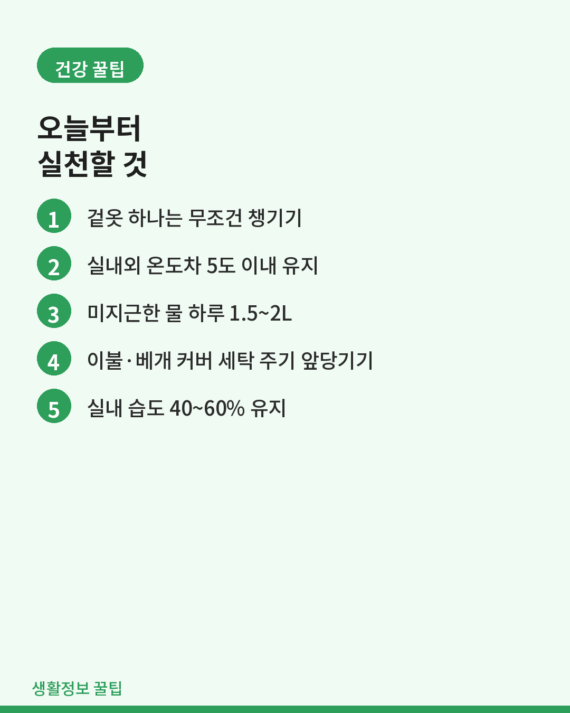
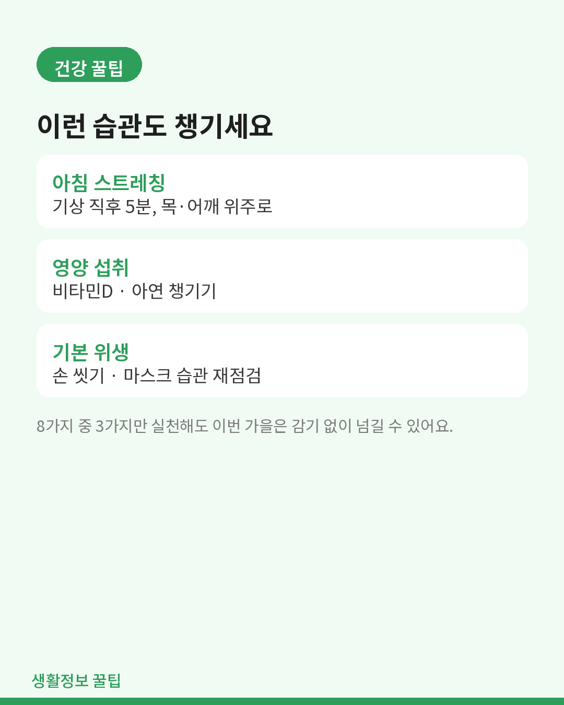
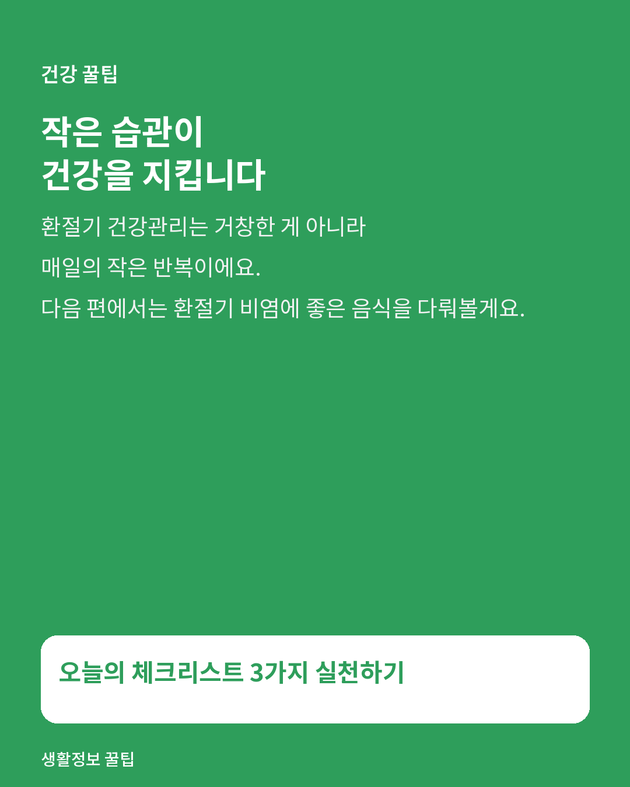

건강
처서 지나면 훅 온다는 환절기 감기, 미리 막는 건강관리 8가지
일교차가 벌어지기 시작할 때, 병원 가기 전에 미리 해둘 수 있는 것들.

"처서가 지나면 모기 입도 삐뚤어진다"는 말처럼, 8월 말을 기점으로 낮과 밤의 기온 차가 확 벌어집니다. 이 시기에 유독 감기, 비염, 몸살이 늘어나는 이유는 일교차에 몸이 적응하지 못하기 때문입니다.

1. 겉옷 하나는 무조건 챙기기
아침엔 쌀쌀하고 낮엔 더운 전형적인 환절기 날씨입니다. 얇은 가디건이나 바람막이를 가방에 넣어두는 것만으로도 체온 변화로 인한 면역력 저하를 크게 줄일 수 있습니다.
2. 실내외 온도차는 5도 이내로
에어컨을 계속 틀다 보면 실내외 온도차가 10도 가까이 벌어집니다. 이 온도차가 자율신경계를 혼란스럽게 만들어 몸살의 원인이 됩니다. 냉방 온도는 바깥 기온보다 5~6도 낮은 수준이 적당합니다.
3. 미지근한 물 자주 마시기
환절기엔 호흡기 점막이 건조해지기 쉽습니다. 찬물 대신 미지근한 물을 하루 1.5~2L 나눠 마시면 목과 코 점막의 방어력을 유지하는 데 도움이 됩니다.
4. 이불·베개 커버 세탁 주기 앞당기기
여름 동안 쌓인 땀과 먼지, 진드기는 환절기 비염과 알레르기의 주범입니다. 평소보다 세탁 주기를 1~2주 앞당겨 보세요.
5. 자기 전 실내 습도 40~60%
가습기가 없다면 젖은 수건을 널어두는 것만으로도 효과가 있습니다. 건조한 공기는 목 통증과 기침을 유발하는 대표적인 원인입니다.
6. 아침 공복 스트레칭 5분
기상 직후 가볍게 몸을 풀어주면 자율신경 균형을 잡는 데 도움이 됩니다. 특히 목과 어깨를 풀어주면 두통 예방에도 좋습니다.
7. 비타민D·아연 챙기기
일조량이 줄어드는 계절 전환기에는 비타민D 부족이 흔합니다. 아연은 면역세포 활성화에 관여하니 견과류, 해산물 등으로 챙겨보세요.

8. 손 씻기·마스크 습관 재점검
기본이지만 가장 확실한 예방법입니다. 특히 대중교통 이용 후와 식사 전에는 꼭 손을 씻는 습관을 다시 챙겨보세요.

마무리
환절기 건강관리는 거창한 게 아니라 작은 습관의 반복입니다. 여덟 가지 중 세 가지만 실천해도 이번 가을은 한결 수월할 겁니다.